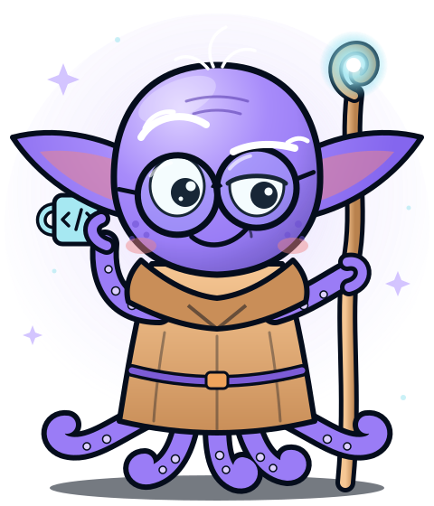

Octocode Workshop · the end
Thank you.
Make
smart context
.
Start one unfinished step: find its source, check it, then build.
Guy Bary
octocode.ai · github.com/bgauryy/octocode

“Smart context, make you must.”